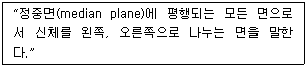
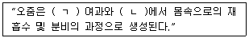
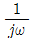
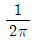
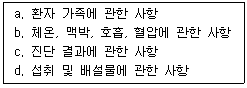
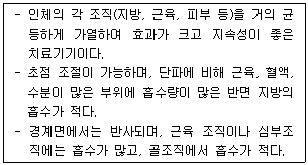

의공기사 (2011-10-02 기출문제)
1과목: 기초의학 및 의공학
1. 동잡음(motion artifact)을 줄이기 위한 방법으로 적절하지 않은 것은?
- 전극과 피부간의 움직임을 최소화 한다.
- 움직임이 적은 부분에 전극을 부착한다.
- 전극과 피부간의 접촉면을 건조하게 유지한다.
- 전극 주위의 전극선을 움직이지 않도록 고정한다.
(정답률: 96%)

2. 다음은 해부학적 방향에 대한 용어설명이다. 해당하는 방향은?

- 관상면(coronal plane)
- 시상면(sagittal plane)
- 이마면(frontal plane)
- 가로면(transverse plane)
(정답률: 93%)
3. 다음 설명의 ( ) 안에 알맞은 단어는?

- (ㄱ) : 세뇨관, (ㄴ) : 사구체
- (ㄱ) : 사구체, (ㄴ) : 세뇨관
- (ㄱ) : 보우만 주머니, (ㄴ) : 세뇨관
- (ㄱ) : 보우만 주머니, (ㄴ) : 사구체
(정답률: 93%)
4. 감각기관의 작용기전으로 틀린 것은?
- 인간은 감각으로 109bit/s의 많은 정보를 받아들인다.
- 감각으로 전달받은 정보 중 극히 작은 양만(102bit/s) 의식적으로 받아진다.
- 신체의 감각은 질과 양으로만 규정되어진다.
- 감각정보는 중추에서 국소순위 편제(topographic organization)를 유지하며 처리된다.
(정답률: 92%)
5. 심전도의 표준사지유도 중에서 왼발 전극에 양극을, 왼손 전극에 음극을 주고 두 지점간의 전위차를 기록하는 유도는?
- 제1 유도
- 제2 유도
- 제3 유도
- aVF 유도
(정답률: 84%)
6. 뇌파에 대한 설명으로 틀린 것은?
- 신경흥분 전달물질은 acetycholine이다.
- 하나의 파(주기)의 산과 산, 계곡과 계곡 사이를 연결 한 것을 주기라 한다.
- 뇌파의 진폭은 보통[㎶]로 나타낸다.
- 모든 신경섬유는 수초로 둘러싸여 있다.
(정답률: 89%)
7. 심장과 관련된 설명 중 틀린 것은?
- 좌심방, 좌심실, 우심방, 우심실이 벽 중에서 좌심실의 벽이 가장 두껍다.
- 심근의 활동전위는 골격근의 활동전위보다 기간이 길다.
- 심장근 활동전위 곡선에서 고평부(Plateau)가 생기는 것은 Fe의 작용 때문이다.
- 심장의 흥분과정이나 그 전도과정에 이상이 발생하여 심장 리듬에 이상이 생긴 경우를 부정맥이라 한다.
(정답률: 84%)
8. 직육면체의 금속에 열을 가하고 길이의 변화에 따른 저항을 측정하였다. 열에 의해 금속의 길이는 20%늘어났고, 면적은 10% 증가했다. 저항계수가 열에 의해 10% 증가했다면 총 저항의 변화율은?
- 10% 감소
- 10% 증가
- 20% 감소
- 20% 증가
(정답률: 92%)
9. 센서에서 입력변화에 대한 출력의 변화 정도를 비로 표현한 것을 무엇이라 하는가?
- 직선성
- 민감도
- 복귀도
- 반복
(정답률: 89%)
10. 감각과 감각기관에 주어지는 자극의 유형이 잘못 짝지어진 것은?
- 감각 : 접촉, 자극 : 압력
- 감각 : 추위, 자극 : 온도
- 감각 : 청각, 자극 : 화학물질
- 감각 : 미각, 자극 : 화학물질
(정답률: 82%)
11. 동맥과 정맥에 대한 설명으로 옳은 것은?
- 대개 정맥은 이중관을 가지고 있다.
- 대개 정맥은 두꺼운 내벽을 가지고 있다.
- 대개 정맥은 판막이 있다.
- 중간 크기의 정맥이나 대정맥에는 외막 속에 혈관에 영양을 공급하는 자양혈관이 있으며 특히 대정맥에 많다.
(정답률: 83%)
12. 다음 중 중추 신경계에 속하지 않는 것은?
- 미주 신경
- 시상
- 뇌간
- 척수
(정답률: 78%)
13. 다음 그림은 일회용 금속판 전극(disposable electrode)의 단면을 나타낸 것이다. 그림에서 전해질겔(electrolyte gel)은 어느 부분인가?
- Ⓐ 부분
- Ⓑ 부분
- Ⓒ 부분
- Ⓓ 부분
(정답률: 94%)
14. 전극을 사용하여 보다 정확한 생체전기신호를 얻기 위한 방법으로 옳지 않은 것은?
- 표피 각질층을 벗긴다.
- 피부에 상처를 낸다.
- 주위조건을 건조하게 한다.
- 염화이온을 이용한 젤 형태의 전해질 크림을 사용하여 접촉상태를 좋게 한다.
(정답률: 86%)
15. 다음 중 휴지기 전위를 조정하는 메커니즘이 아닌 것은?
- Na+ 이온보다 K+ 이온을 더 잘 통과시킨다.
- 삼투 현상에 의해 이온을 이동시켜 준다.
- 크기가 큰 음전하의 단백질은 세포막을 통과할 수 없다.
- Na+/K+ 펌프는 Na+ 이온 3개를 내보낼 때 K+ 이온 2개를 들여온다.
(정답률: 72%)
16. 용량성 센서에서 축전기이 정전용량을 변화시키는 방법이 아닌 것은?
- 두 평행판 사이의 간격을 변화시킨다.
- 두 판이 마주하고 겹치는 면적을 변화시킨다.
- 평행판 사이에 유전체를 삽입한다.
- 평행판에 전압을 가한다.
(정답률: 87%)
17. 어떤 변환기에 작용하는 출력 전압을 계산하기에 용이한 계수는?
- 변환계수
- 게이지계수
- 강도계수
- 비례계수
(정답률: 50%)
18. 정상적인 건강한 성인의 승모판은?
- 심실이 수축하는 동안 닫힌다.
- 심방이 수축하는 동안 닫힌다.
- 심방이 이완하는 동안 열린다.
- 심장순환시 시종일관 열린다.
(정답률: 71%)
19. 세포에서 유전정보인 DNA와 단백질을 만드는데 필요한 RNA를 담고 있는 구조는?
- 세포막
- 막단백질
- 미토콘드리아
- 핵
(정답률: 88%)
20. 시냅스에 대한 설명 중 옳지 않은 것은?
- 한 뉴런과 다음 뉴런의 접속되는 부위를 말한다.
- 신경세포와 근세포 또는 신경세포와 선세포 사이에서도 형성될 수 있다.
- 시냅스 전 섬유, 시냅스 간격, 시냅스 후 섬유로 구성 되어 있다.
- 시냅스 후 섬유에는 신경전달물질이 존재하여 시냅스 전 섬유의 반응을 받는다.
(정답률: 72%)
2과목: 의용전자공학
21. 다음 그림과 같은 회로에서 AC단자에 ν=Vmsinωt [V]를 공급했을 때 AB 양단의 전압[V]은 얼마인가?
- 3Vm
- 4Vm
- 5Vm
- 6Vm
(정답률: 87%)
22. 신호를 디지털 부호로 코드화해서 기억하거나 전송할 때 코드화된 신호를 원래 형태로 되돌리는 회로는?
- 인코더
- 디코더
- 카운터
- 멀티플렉서
(정답률: 88%)
23. R-C 직렬회로의 R=50[Ω], C=1[F]이다. 이 회로에 직류 전압 E=100[V]를 인가할 때 흐르는 전류는? (단, C의 초기전압은 무시함)
- 2e-0.02t[A]
- 2e-50t[A]
- 2(1-e-0.02t)[A]
- 2(1-e-50t)[A]
(정답률: 51%)
24. 체온이나 생체조직의 온도를 측정하는 소자와 관계없는 것은?
- 전기저항의 온도변화를 이용한 소자(thermistor)
- 온도차에 의해 기전력이 발생하는 현상(seebeck effect)을 이용한 소자
- 체온에서 발생하는 온도변화를 측정하는 소실율법(clearance method) 소자
- 온도에 따라 비저항이 증가하여 저항이 변하는 소자
(정답률: 61%)
25. 저항 30[Ω]과 유도리액턴스 40[Ω]을 직렬로 접속한 후 100[V]의 전압을 인가할 때 회로에 흐르는 전류는?
- 2[A]
- 3[A]
- 4[A]
- 5[A]
(정답률: 77%)
26. 정전용량이 C인 콘덴서의 극판사이에 비유전율이 8인 유전체를 제거하고 공기로 채웠을 때의 용량을 C0 라고 하면 C와 C0 의 관계는?
- C = 8C0
- C = 4C0
- C = C0 / 8
- C = C0 / 4
(정답률: 87%)
27. 트랜지스터의 공통 이미터접지 회로가 있을 때 콜렉터 전류가 5[mA]이고, 베이스 전류가 0.⑤[mA]이었다. 이 때 직류전류 증폭율 βdc 는?
- 0.99
- 1
- 99
- 100
(정답률: 83%)
28. 호흡기의 기능평가를 위하여 측정이 필요한 생체 변수가 아닌 것은?
- 기체압력
- 액체농도
- 폐용적(부피)
- 호흡기류
(정답률: 90%)
29. CPU 내부의 처리할 명령이나 연산의 결과값 등을 임시로 기억하는 장소로 메모리 중에 속도가 빠른 특징을 가진 것은?
- ROM
- RAM
- 광디스크
- 레지스터
(정답률: 85%)
30. JK 플립플롭에서 J=0, K=0 그리고 Q=0 일 때 다음상태인 Q1 의 상태와 J=0, K=0 그리고 Q=1 일 때 다음상태인 Q2의 상태를 올바르게 표현한 것은? (단, Q는 현재 상태를 의미한다.)
- Q1 = 0, Q2 = 0
- Q1 = 0, Q2 = 1
- Q1 = 1, Q2 = 0
- Q1 = 1, Q2 = 1
(정답률: 66%)
31. 진공 중에 두 정전하 Q1 과 Q2 사이에 작용하는 힘을 F 라고 하고, Q1 과 Q2 부근에 정전하 Q3 을 놓을 경우에 Q1 과 Q2 사이에 작용하는 힘을 F' 라고 하면 F와 F'의 크기 관계는?
- F ＞ F'
- F ＜ F'
- F = F'
- Q3 의 크기에 따라 다르다.
(정답률: 73%)
32. 생체계측과 관련하여 생체현상의 특수성에 대한 설명 중 틀린 것은?(오류 신고가 접수된 문제입니다. 반드시 정답과 해설을 확인하시기 바랍니다.)
- 재현성이 빈약하다.
- 개체 내에서는 향상성이 유지되므로, 개체의 차가 거의 없다.
- 생체는 순응, 피로, 기억 등의 성질을 포함한다.
- 생체 어느 특정부위 측정 신호의 순수성을 유지하기 어렵다.
(정답률: 74%)
33. 신호의 특성을 결정하는 기본 요소가 아닌 것은?
- 주파수
- 위상
- 진폭
- 차단주파수
(정답률: 88%)
34. 점 A에서 점 B로 20[C]의 전하를 옮기는데 60[J]의 에너지가 필요하다면 두 점 사이의 전압은?
- 1[V]
- 2[V]
- 3[V]
- 4[V]
(정답률: 92%)
35. 다음 펄스변조 방식 중 디지털변조(불연속레벨변조) 방식이 아닌 것은?
- PCM(Pulse Code Modulation)
- PNM(Pulse Number Modulation)
- PFM(Pulse Frequency Modulation)
- DM(Delta Modulation)
(정답률: 77%)
36. CPU를 주변장치와 연결하고 데이터 신호를 받아들이거나 제어 신호를 출력하는 인터페이스 장치는?
- I/O포트
- 주기억장치
- 레지스터
- 카운터
(정답률: 90%)
37. 신호 X(t)를 한 번 적분하였을 경우, 퓨리에 (Fourier) 변환된 X(jω)의 주파수 변화의 표현이 옳은 것은?
- jωX(jω)

X(jω)- ω2X(jω)

X(jω)
(정답률: 91%)
38. 변압기의 권선비가 4 : 1 일 때 1차 권선에 115Vrms 가 인가되면 2차 피크 전압은?
- 약 40.7[V]
- 약 163[V]
- 약 64.6[V]
- 약 170[V]
(정답률: 68%)
39. 트랜지스터의 DC 바이어스 중 단일전압을 사용하면서 IE 가 βdc와 무관한 안정도를 얻을 수 있어 가장 널리 사용되는 바이어스 방식은?
- 이미터 바이어스
- 베이스 바이어스
- 전압분배 바이어스
- 콜렉터 궤환바이어스
(정답률: 56%)
40. 주파수 범위가 8~13Hz이고, 정서적으로 안정된 상태에 있을 때 가장 활성화되는 뇌전도 파형은?
- 델타파
- 세타파
- 알파파
- 베타파
(정답률: 77%)
3과목: 의료안전·법규 및 정보
41. 다음 중 추적관리대상 의료기기의 지정 대상이 아닌 것은?
- 응급시 착용하는 인공호흡기
- 이식형 인공심장 박동기
- 인공심장판막
- 이식형 의약품주입펌프
(정답률: 91%)
42. 데이터마이닝(Data mining)의 특징 설명으로 틀린 것은?
- 세 집단 이상의 변수간의 관계를 설명하는 방법이다.
- 일반화(generalization)에 초점을 두고 있다.
- 경험적 방법에 근거하고 있다.
- 대용량의 관측 가능한 자료를 다룬다.
(정답률: 64%)
43. 의료기기 기술문서 등 심사에 관한 규정에서 의료기기의 본체를 구성하기 위하여 필요한 부분을 무엇이라고 정의하였는가?
- 구성품
- 부분품
- 부속품
- 부품
(정답률: 66%)
44. 의료법상 간호기록부에 반드시 기재해야 할 사항으로 맞게 짝지어진 것은?

- a, d
- b, d
- b, c
- a, c
(정답률: 75%)
45. 진단용 방사선 발생장치의 안전관리에 관한 규칙에 의거 방사선 안전에 관한 설명 중 옳지 않은 것은?
- 방사선 안전관리에는 진단 영상정보에 관한 설비의 관리와 방사선 관계 종사자에 대한 피폭 관리가 포함된다.
- 방사선 관계 종사자는 검사받은 진단용 방사선 발생장치에 대하여는 검사를 받은 날부터 5년마다 검사기관의 검사를 받아야 한다.
- 방사선구역이란 진단용 방사선 발생장치를 설치한 장소 중 외부방사선량이 주당 0.3mSv(30mrem) 이상인 곳으로써 벽, 방어칸막이 등의 구획물로 구획되어진 곳을 말한다.
- 진단용 엑스선 발생기도 진단용 방사선 발생장치에 해당한다.
(정답률: 86%)
46. 레이저 등급에 대한 설명 중 틀린 것은?
- 등급 1M : 광학기기로 레이저광을 보거나 조사하면 위험하다.
- 등급 2 : 눈에 레이저광이 조사될 때 0.25초의 눈 R깜빡임으로 보호될 수 있다.
- 등급 3B : 눈에 레이저광이 간접 조사되면 위험하다.
- 등급 4 : 인체에 레이저광이 직접 또는 방사되어 조사되면 위험하다.
(정답률: 79%)
47. 병원정보시스템(HIS)의 구성 요소에 포함되지 않는 것은?
- MIS(경영정보시스템)
- OCS(처방전달시스템)
- PACS(의료영상시스템)
- OA(사무자동화시스템)
(정답률: 75%)
48. 다음 중 접지공사의 목적이 아닌 것은?
- 뇌해(벼락) 방지용
- 누설전류로 인한 감전 방지용
- 단락사고시 전원차단용 기기의 정지용
- 고압전류를 대지로 흘려 감전을 방지하는 작용
(정답률: 89%)
49. 다양한 의료정보시스템간 정보의 교환을 위하여 미국국립표준연구소가 인증한 의료정보 교환 표준규약은?
- HL7(Health Level 7)
- DICOM(Digital Imaging and Communication in Medicine)
- SNOMED(Systematized Nomenclature of Medicine)
- PACS(Picture Archiving and Communication Systems)
(정답률: 77%)
50. 전자파의 발생 원인에 대한 설명으로 틀린 것은?
- 전자파는 전류가 흐르는 송전 전력선 근처에서 발생할 수 있다.
- 높은 자장을 이용한 진단용 MRI에서 전자파가 발생할 수 있다.
- 병원에서 진단목적으로 사용하는 초음파 기기에서는 초음파가 발생하고 전자파는 발생하지 않는다.
- 진단용 CT에서 사용하는 X-선도 전자파이다.
(정답률: 84%)
51. 의료기기 품목 및 품목별 등급에 관한 규정에 의거 의료용 소독기에 해당하지 않은 것은?
- 의료용자외선소독기
- 의료용방사선멸균기
- 의료용적외선소독기
- 건열멸균기
(정답률: 61%)
52. 다음 중 의료기기감시원의 자격이 있는 자는?
- 10년 이상 경험이 있는 대학 교수
- 1년 이상 보건의료행정에 관한 업무에 종사한 경험이 있는 소속 공무원
- 5년 이상 경험이 있는 의료기기 판매업자
- 3년 이상 경험이 있는 병원 의사
(정답률: 87%)
53. 다음 중 ICD에 대한 설명으로 옳은 것은?
- 치료비에 의거한 진단과 치료과정을 정의한다.
- 환자기록을 추출해내기 위한 코드체계이다.
- 세계적인 의학 서적을 색인하는데 쓰인다.
- 전자의무기록을 위하여 만들어졌다.
(정답률: 70%)
54. 의료기관 개설자에 대하여 사용중인 의료기기가 검사를 받아 부적합으로 판정된 경우 의료기기의 사용중지를 명할 수 있는 자가 아닌 것은?
- 의료기기 사용업자
- 시장
- 구청장
- 식품의약품안전청장
(정답률: 88%)
55. 의료법에서 제시하는 의료기관 중 병원 ㆍ 한방병원은 몇 개 이상의 병상을 갖추어야 하는가?
- 10개 이상
- 20개 이상
- 30개 이상
- 40개 이상
(정답률: 71%)
56. 의료기기의 안전성 ㆍ 유효성 심사에 관한 첨부 자료 요건 중 임상시험 성적에 관한 자료에 포함되는 일반 사항이 아닌 것은?
- 실시기관명 및 주소
- 임상시험기간
- 성능의 평가기준, 평가방법 및 해석방법
- 3, 4등급 품목의 임상데이터
(정답률: 78%)
57. 의료기기의 생물학적 안정성 평가를 위한 검체의 일반적인 용출 조건이 아닌 것은?
- (37 ± 1)℃에서 (72 ± 2) 시간 동안
- (50 ± 2)℃에서 (72 ± 2) 시간 동안
- (100 ± 2)℃에서 (24 ± 2) 시간 동안
- (121 ± 2)℃에서 (1 ± 0.1) 시간 동안
(정답률: 59%)
58. 의료정보 종류의 하나인 “보건복지 및 의료통계”에 해당 하지 않은 것은?
- 의료보험
- 의무기록
- 사망률
- 질병통제
(정답률: 45%)
59. PACS는 X-RAY 필름 기반의 영상 관리 시스템의 문제점을 해결하지 위해 도입되었다. 다음 중 필름 기반 시스템의 문제점과 거리가 먼 것은?
- 필름의 인상과 현상액으로 인한 환경오염이 발생한다.
- 필름 기반 시스템은 초기 구축비용이 매우 높다.
- 필름을 보관하기 위해 넓은 저장 공간과 비용이 소용 된다.
- 필름을 검색하는데 많은 시간과 인력이 필요하다.
(정답률: 78%)
60. 휴대용 의료기기의 기계적 안전을 위한 낙하시험에서 기기의 중량별 낙하높이가 옳지 않은 것은?
- 7kg - 5cm
- 30kg - 4cm
- 45kg - 3cm
- 70kg - 2cm
(정답률: 81%)
4과목: 의료기기
61. 채열진단기기에서 사용하는 전자파의 대역은?
- X-선
- 고주파
- 자외선
- 적외선
(정답률: 88%)
62. 정확한 해부학적 정보와 암 진단 등에 필요한 생화학적 정보를 동시에 제공하여 암의 조기진단 등에 널리 사용되는 의료기기는?
- CT
- PET
- PET-CT
- SPECT
(정답률: 83%)
63. 다음 중 CT넘버(number)에 대한 설명으로 옳은 것은?
- 공기의 CT넘버(CT number)는 +1000H
- 뼈의 CT넘버(CT number)는 -1000H
- CT number = 1000 × (물의 흡수계수 - 어떤 조직의 흡수계수) / 물의 흡수계수
- 여러 생체조직에서 흡수계수의 값을 물을 0으로 한 상대치로서 나타낸 것
(정답률: 77%)
64. 혈액투석에서 용질 제거 방법만으로 나열된 것은?
- 확산, 초여과
- 확산, 대류
- 대류, 초여과
- 확산, 대류, 초여과
(정답률: 82%)
65. 제세동기의 설명으로 틀린 것은?
- 심장에 강한 전기충격을 가해 세동을 종료시킨다.
- 안전을 위해 심근의 20% 미만이 탈분극 되도록 한다.
- 심근의 세포들을 동시에 탈분극시켜 절대적 불응기로 만든다.
- 동방결절이 회복되어 정상적인 리듬을 찾도록 한다.
(정답률: 84%)
66. CT에서 MTF(Modulation Transfer Function)가 나타내는 성능지표는?
- 선형성
- 대조도(contrast)
- 잡음성능
- 공간해상도
(정답률: 76%)
67. 산소포화농도측정과 관련 있는 법칙은?
- 광의 흡수에 관한 Beer의 법칙
- 광의 방출에 관한 Beer의 법칙
- 케겔 운동
- Imbert-Fick의 법칙
(정답률: 83%)
68. 픽(Fick)법을 이용한 심박출량 측정에서 요구되는 측정항목이 아닌 것은?
- 폐동맥의 산소압력
- 폐정맥의 산소농도
- 폐동맥의 산소농도
- 폐동맥혈로 공급되는 산소량
(정답률: 75%)
69. MRI영상장치에서 자기공명을 위한 고주파 발신과 생체에서의 MR신호를 수신하기 위한 구성 요소로 맞는 것은?
- RF코일
- shim코일
- gradient코일
- super conductor코일
(정답률: 82%)
70. 선형가속기에서 일반적인 치료용으로 사용되는 X-선 에너지의 크기는?
- 4 - 5 MV
- 30 - 50 MV
- 80 - 100 MV
- 130 - 150 MV
(정답률: 66%)
71. X-선 단층촬영장치(CT)에 관한 설명 중 틀린 것은?
- 고정된 X-선 발생장치로부터 나와 영상을 얻고자 하는 대상 물체를 투과한 X-선을 반대편의 고정된 X-선 검출기로 영상 신호를 획득한다.
- X-선 CT 영상은 컴퓨터를 이용하여 projection reconstruction 알고리즘과 같은 분석적(analytic) 방법 또는 반복적(iterative) 방법으로 재구성된다.
- X-선 CT 영상은 MRI 영상에 비해 연부조직(soft tissue)의 대조도(contrast)가 뛰어나지 않다.
- 환자 조직의 X-선에 대한 감쇄계수를 정규화하여 나타내는 단위로 Hounsfield 단위를 사용한다.
(정답률: 70%)
72. 비침습적인 방법으로 혈중산소포화도를 측정할 때 사용하는 전자파로 옳게 짝지어진 것은?
- 자외선, 보라색 빛
- 적외선, 빨간색 빛
- 적외선, 파란색 빛
- 자외선, 빨간색 빛
(정답률: 88%)
73. 말초신경에 직접 전기자극을 가하여 신경의 지배하에 있는 근육으로부터 발생되는 활동전위를 측정 기록하는 근전도는?
- 일반 근전도
- 유발 근전도
- 양극 근전도
- 표면 근전도
(정답률: 81%)
74. 체외충격파쇄석기에서 미량의 화학물질을 폭파시켜 발생되는 충격파를 이용하는 방식은?
- 수중방전(spark gap) 방식
- 압전소자(piezo electric) 방식
- 미소발파(micro explosion) 방식
- 전자진동(electromagnetic) 방식
(정답률: 90%)
75. 다음 의료기기 중 카테터를 사용하지 않은 것은?
- 태아심음기
- 열희석식 심박출량계
- 관혈식 혈압계
- 뇌압계
(정답률: 76%)
76. 단색광기(monochrometer)의 부품이 아닌 것은?
- 프리즘
- 소작분무기
- 슬릿
- 회절격자
(정답률: 74%)
77. X-선 발생 장치를 3부분으로 나눌 때 해당되지 않는 것은?
- X -선관
- 고전압 발생장치부
- 촬영부
- 제어장치부
(정답률: 74%)
78. 서맥의 대표적인 치료법 중 하나가 인공 페이스메이커이다. 서맥이 발생할 때 생기는 일반적인 증상이 아닌 것은?
- 혈액 박출량이 충분치 못함
- 현기증 및 실신
- 호흡곤란
- 두통
(정답률: 72%)
79. 다음 설명에 해당하는 전기자극 치료기는?

- SSP(Silver spike point therapy)
- 극초단파치료기(Microwave diathermy)
- 간섭전류치료기(Interferential current therapy)
- 경피신경전기자극치료기(Transcutanecus electrical nerve stimulation)
(정답률: 71%)
80. IABP(Intra Aortic Balloon Pump)의 심기능 보조원리 설명으로 틀린 것은?
- 탄성막이 있어 압축 공기가 혈액을 짜냄
- 심장의 산소소비량 감소
- 심박출량 증가
- 관상동맥 혈류량의 증가
(정답률: 60%)
5과목: 의용기계공학
81. 경골은 하지의 주요한 체중부하골이다. 만약 체중의 45%가 한쪽 슬관절 근위부에 있다면 50kg의 사람이 해부학적 자세로 서 있을 때 양쪽 경골에 작용하는 압축력은 약 몇 [N] 인가?
- 400
- 440
- 520
- 550
(정답률: 75%)
82. 중합방법에 따라 여러 종류로 만들어 지며 심장격벽, 탈장 수술용 패치에 이용되는 합성고분자 재료는?
- 폴리에틸렌(PE)
- 폴리프로필렌(PP)
- 폴리아마이드(Polyamide)
- 폴리우레탄(Polyurethan)
(정답률: 69%)
83. 다음 중 생체재료의 용도가 아닌 것은?
- 질환의 진단에 사용되는 시약 또는 기기의 소재
- 의료용구에 사용되는 소재
- 내열성 소재
- 인공장기용 소재
(정답률: 67%)
84. 생체 조직의 수동적인 특성 중 분산 성질에 대한 설명으로 틀린 것은?
- 수 10Hz, 수 kHz, 약 18GHz 부근에서 도전율이 계단적으로 감소한다.
- ɑ분산은 생체 조직 내의 각종 이온의 집산 시간이나 표면 컨덕턴스에 기인한다.
- β분산을 구조 분산이라 한다.
- y분산은 물의 쌍극자 능률에 따른 유전 분산에 기인 한다.
(정답률: 64%)
85. 적혈구가 붕괴되어 헤모글로빈이 혈구 밖으로 용출되는 용혈 현상의 원인이 아닌 것은?
- 독소 반응
- 정전기 반응
- 면역 반응
- 삼투압
(정답률: 71%)
86. 주위환경의 온도가 낮은 경우 인체의 화학적 조절과정이 올바른 것은?
- 교감신경 긴장 → 아드레날린 분비 → 피부혈관 수축 → 떨림에 의한 체열산생
- 떨림에 의한 체열산생 → 교감신경 긴장 → 피부혈관 수축 → 아드레날린 분비
- 피부혈관 수축 → 교감신경 긴장 → 아드레날린 분비 → 떨림에 의한 체열산생
- 교감신경 긴장 → 피부혈관 수축 → 아드레날린 분비 → 떨림에 의한 체열산생
(정답률: 61%)
87. 다음 중 주파수 100[Hz]에서 저항률이 가장 높은 조직은?
- 혈액
- 간장
- 골격근
- 지방
(정답률: 84%)
88. 힘의 전달용 나사로 적당한 것은?
- 3각나사
- 4각나사
- 미터나사
- 마름모꼴나사
(정답률: 87%)
89. 정상적인 혈류의 경우 혈관의 직경이 2배가 되면 혈관에 흐르는 유량은 어떻게 되는가?
- 변함이 없다.
- 2배가 된다.
- 4배가 된다.
- 16배가 된다.
(정답률: 80%)
90. 열 전도(conduction)에 대한 설명 중 옳지 않은 것은?
- 두 물체의 온도차이가 클수록 열전달이 많이 된다.
- 두 물체사이의 표면적이 증가할수록 열전달이 증가한다.
- 거리에 비례하여 열전달이 증가한다.
- 열전도계수에 비례하여 열전달이 증가한다.
(정답률: 83%)
91. 생체조직에 이식된 재료가 시간이 경과함에 따라서 점차 분해되거나 생체 조직에 흡수되어 소멸되는 생체재료는?
- 생체복합재료
- 생체활성재료
- 생체불활성재료
- 생체재흡수재료
(정답률: 83%)
92. 방사선치료의 특이성에 대한 설명 중 옳은 것은?
- 방사선에 노출된 종양세포만이 방사선의 영향을 받는다.
- 정상세포와 암세포는 회복속도가 같다.
- 몇몇 종류의 암세포들은 방사선을 쪼이면 세포분열이 왕성하게 일어나며, 그로 인해 산소공급 부족으로 세포괴사가 일어난다.
- 일정기간에 여러 번 나누어 치료하는 것이 많은 양의 방사선으로 한 번에 조사하는 것보다 효과적이다.
(정답률: 81%)
93. 체내에서 초음파에 의해 발생하는 캐비테이션 현상에 대해 잘못 설명한 것은?
- 초음파의 에너지 밀도가 1W/cm2이상이 되면 기포가 발생한다.
- 발생된 기포는 양압기에 큰 충격을 주어 조직을 파괴한다.
- 혈액중의 기포에 초음파가 조사되면 순간적으로 기포가 소멸된다.
- 초음파 메스는 캐비테이션 성질을 응용한 의료장비이다.
(정답률: 85%)
94. 높이 10m에서 질량 5kg의 공이 자유낙하로 떨어진다. 운동에너지와 위치에너지가 같아지는 점에서의 공의 속도는 약 몇 [m/s] 인가?
- 9.9
- 4.8
- 2.5
- 19.8
(정답률: 66%)
95. 하지의지로만 구성된 항목이 아닌 것은?
- 대퇴의지, 고관절의지, 하퇴의지
- 슬관절의지, 하퇴의지, 대퇴의지
- 고관절의지, 슬관절의지, 대퇴의지
- 고관절의지, 견갑의지, 슬관절의지
(정답률: 85%)
96. 생체적합성을 평가하는 방법은 시험하는 조건에 따라서 구별될 수 있으며 세포증식이나 생체조직을 배양하여 생체적합성을 평가하고자 한다. 다음 중 어느 시험조건에 해당하는가?
- 시험관적 시험(Invitro test)
- 생체내 시험(In vivo test)
- 동물 시험(Animal test)
- 임상 시험(Clinical test)
(정답률: 87%)
97. 체간보조기에 대한 설명으로 가장 거리가 먼 것은?
- 척주의 정렬유지 및 기형을 교정한다.
- 골반밴드, 흉추밴드, 후방지주, 외측지주 등으로 구성 되어 있다.
- 3점 고정의 개념이 중요하다.
- 종류로는 경추보조기, 요천추, 흉 요천추보조기, 경흉 요천추보조기 등이 있다.
(정답률: 77%)
98. 점성계수의 단위1[p]=10-1[Ns/m2]일 때 1[cp]는?
- 10-3[N/m2]
- 10-1[N/m2]
- 10-3[Ns/m2]
- 10-1[Ns/m2]
(정답률: 78%)
99. 의용금속재료는 독성/비독성 반응 금속으로 구분된다. 비독성 반응 금속으로서 부식저항이 매우 높은 금속은?
- Fe
- Cu
- Au
- Pt
(정답률: 71%)
100. 내부식성과 내마모성에 대한 형상기억 합금의 특성을 올바르게 설명한 것은?
- 내부식성이 티타늄 보다 크다.
- 내부식성이 Co-Cr 합금 보다 낮다.
- 내마모성이 티타늄에 비해 크다.
- 내마모성이 스테인리스강보다 낮다.
(정답률: 53%)